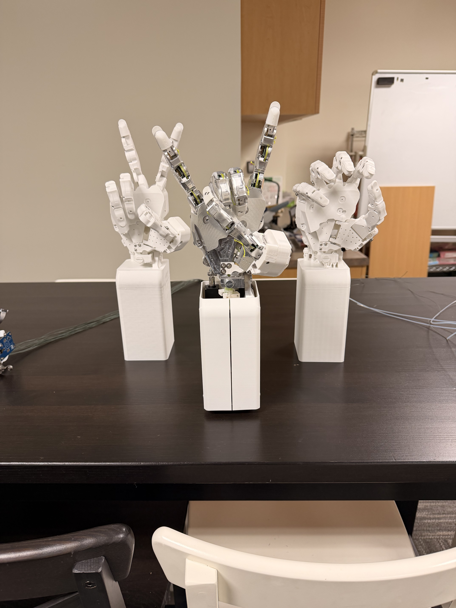
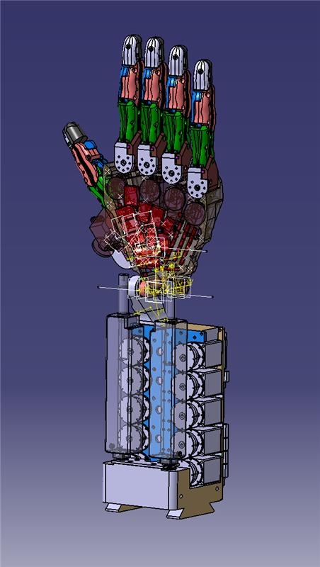
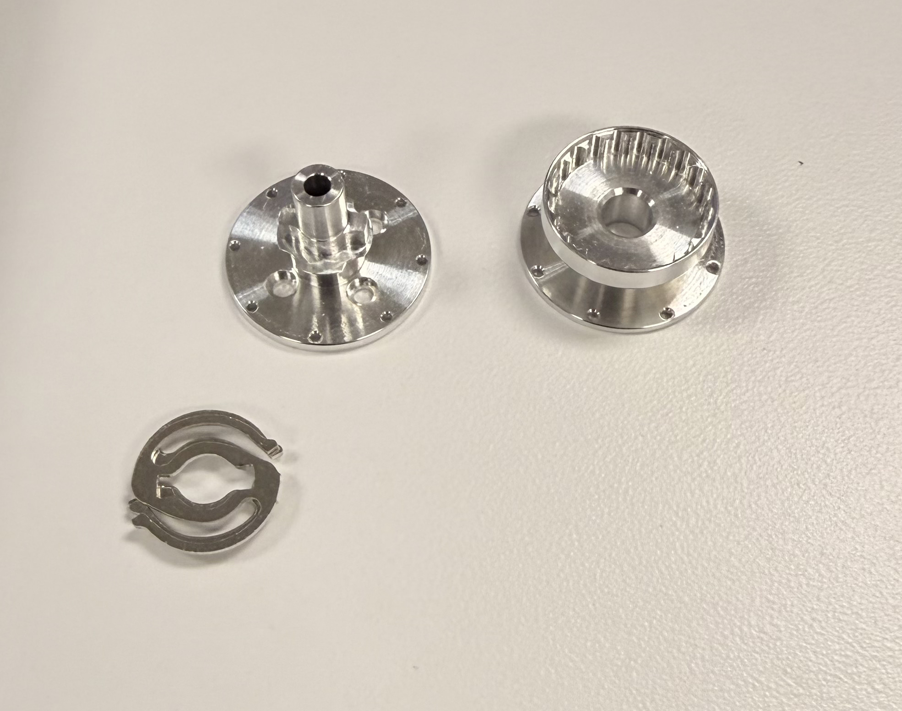

Overview
SF Motors is a tendon-driven hand prototype built around the hard mechanical questions: how to package tendons, joints, bearings, plates, and actuators into a hand that can be assembled and tested. The project documentation includes CAD, plate and bearing details, finger assemblies, and an assembled prototype.
Problem / Motivation
Dexterous robotic hands fail quickly if the mechanism is difficult to assemble, route, tension, or service. This project focuses on making the tendon-driven architecture physical enough to inspect, validate, and iterate, not just keeping it as a CAD concept.
Engineering Constraints
The design had to fit multiple finger assemblies, tendon paths, bearings, fasteners, and palm/actuator structure into a compact hand envelope. The mechanism also needed manufacturable plate geometry and accessible assembly paths so individual fingers and tendon runs could be adjusted during testing.
Design Approach
I treated the hand as a set of repeatable finger modules tied together by a palm and tendon routing system. CAD was used to study the stacked joint geometry, bearing placement, tendon exits, and how machined or printed parts would locate during assembly.
CAD / Mechanical Design
The CAD model tracks the full hand architecture, including finger segments, palm structure, tendon paths, and the actuator/drive packaging below the hand. The design work is strongest when paired with the prototype photos: the same routing and plate decisions can be seen in both the CAD and the physical assembly.
Prototype / Fabrication
The prototype combines metal plate elements, hardware, bearings, fasteners, tendon line, and support parts. Assembly photos show the main validation focus: whether finger mechanisms can be built up cleanly, routed through the palm, and adjusted without blocking access to adjacent joints.
Testing / Results
Visible results support qualitative prototype validation: the hand was assembled enough to evaluate finger packaging, tendon routing, joint-motion access, and part fit. The public writeup focuses on those observable validation steps rather than unsupported quantitative results.
Failures / Iterations
The likely iteration points are the ones visible in the build: tendon routing congestion, friction through the palm, bearing stack alignment, fastener access, and how serviceable the fingers remain after neighboring assemblies are installed. Keep any specific failure modes tied to build notes or test photos rather than turning them into unsupported performance claims.
Lessons Learned
The project shows how much of a tendon-driven hand is decided by small mechanical details: cable exit angles, bearing spacing, stackups, and service access. It is a strong case study because it connects CAD decisions to the prototype realities of routing, alignment, and assembly.
Next Steps
The next useful documentation step is a focused walkthrough of one finger module from CAD through component preparation, assembly, tendon routing, and validation. The strongest future evidence would be measured joint travel, tendon tension, actuation force, repeatability, or failure loads from documented tests.
Gallery
Reference images documenting finger assemblies, the CAD model, machined/metal parts, and the palm/plate structure used to validate the mechanism.


